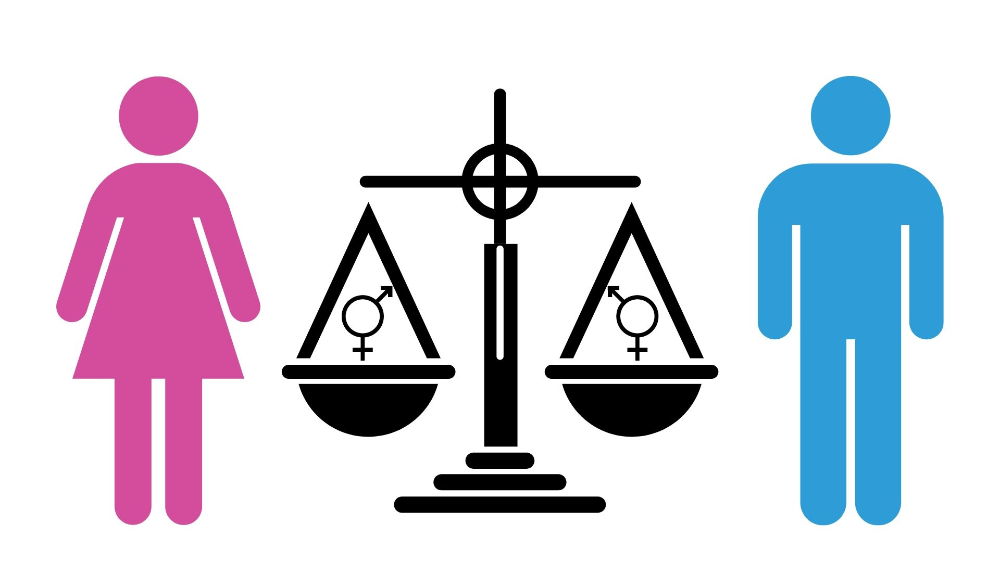

la igualdad de genero consiste en el acceso efectivo al ejercicio de los derechos de las mujeres y los hombres en condisiones equitativas,libres de descriminacion y de violencia. es una condicion indispensable para mejorar la calidad de vida de las personas e impulsar el bienestar y desarrollo social. es una condicion indispensable para mejorar la calidad de vida de las personas e inpulsar el bienestar y desarrollo social,cultural,politico y economico de las comunidades es este sentido es importante resaltar que los derechos de las mujeres,jovenes y niños forman parte inabiniable integral y indivisible de los derechos humanos universales desde la infancia las mujeres enfrentan una desigualdad sistematica el problema es mayor cuando el trato desigual de las mujeres se profundiza devido a caracteristica particulares.
ocupa un lugar importante en las discuciones sobre filosofica politica.sin embargo en las ultimas decadas, en especial tras la publicacion de una teoria de la justicia de john academica. a los devates ya clasicos sobre el contenido,el alcanse la metrica y el valor de la igualdad se an sumado nuevas discuciones que indagan las demandas de la igualdad en territorios conseptuales novedososluego de repasar algunos devates clasicos en materia de igualdad a los devates ya clasicos sobre el contenido el acanse,la metrica o el valor de la igualdad se an sumado nuevas discuciones que indagan las demandas.

Manifiesta la voluntad de conseguir la igualdad real entre hombres y mujeres, dicha igualdad, por lo tanto, debe traducirse en igualdad de derechos y oportunidades. La igualdad entre mujeres y hombres es una cuestión de derechos humanos y una condición de justicia social; es también una cuestión básica, indispensable y fundamental para la igualdad entre las personas, para el desarrollo y la paz.
Es una herramienta de análisis que nos permite identificar las desigualdades de trato y oportunidades entre mujeres y hombres. También es útil para proponer cambios en la organización y estructura de las instituciones y concientizar a las mujeres de la importancia de conocer y ejercer sus derechos.Por ello, en un concepto más amplio, se alude a la necesidad de acabar con las desigualdades de trato y de oportunidades. entre mujeres y hombres..
Independientemente del lugar donde vivamos, la igualdad de género es un derecho humano fundamental. Promover la igualdad de género es esencial en todos los ámbitos de una sociedad sana: desde la reducción de la pobreza hasta la promoción de la salud, la educación, la protección y el bienestar de las niñas y los niños.